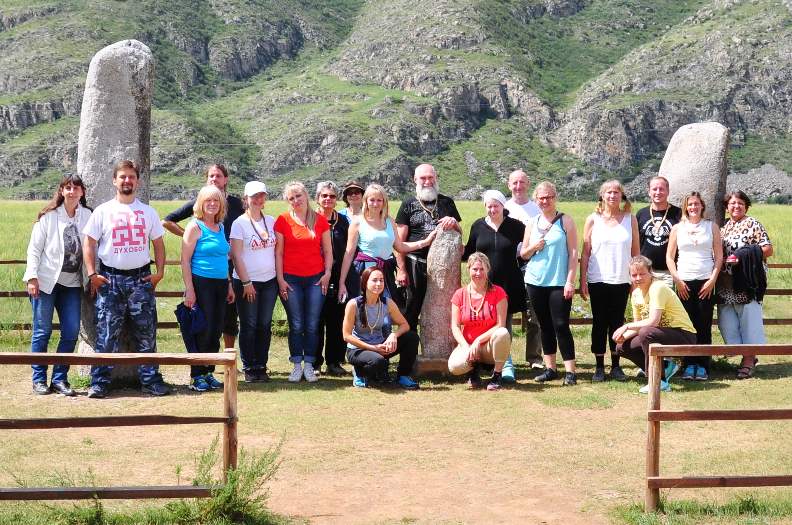
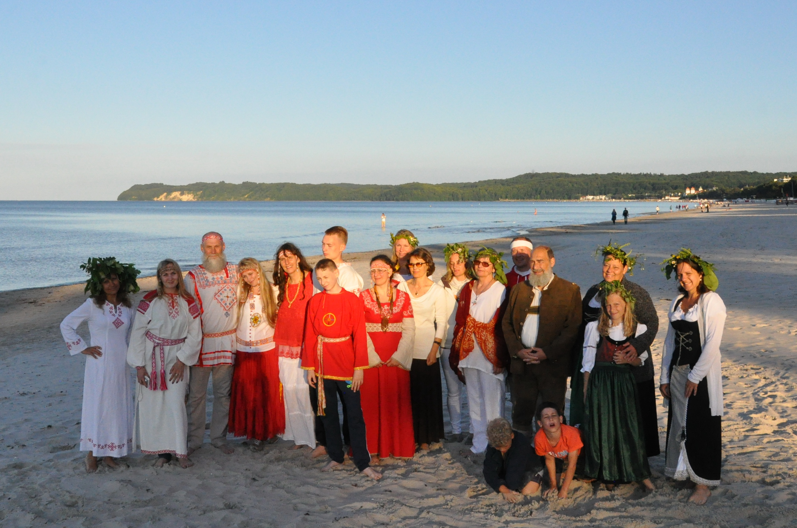
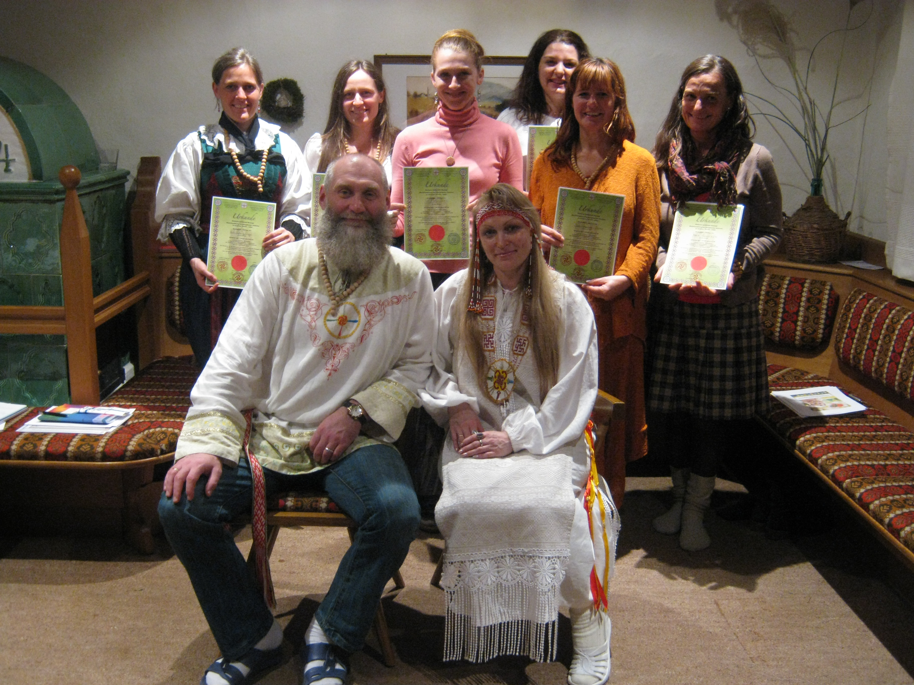
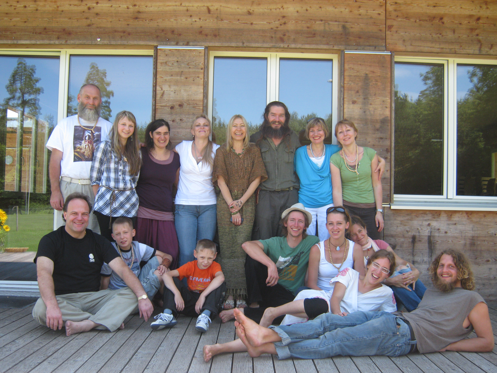

- Соединение человека значимым звеном в родовой цепи поколений и переход его сознания через мосты Родовой памяти в гармоничные потоки Вселенной: Правды, Чести, Совести,
- Единство Противоположностей.
ЗАДАЧИ АКАДЕМИИ
- Научить человека разбираться в потоках энергий, которые проникают в слои жизни и включить родовую память в жизненный поток, чтобы обрести гармонию.
-
Научить человека развивать свои психофизические возможности для самостоятельного нормирования здоровья и событий жизни на основе ведических родовых знаний, чтобы изменить свои духовные и душевные качества, которые включат процессы самоисцеления тела, чтобы вернуть утраченное здоровье и радость жизни.
-
Открыть в человеке родовой потенциал через чистое сознание своей связи с Родом для создания счастливой полноценной семьи и продолжение Рода.
-
Научить человека самому правильно нарабатывать положительную энергию, сохранять её, а уже потом правильно делиться ею и дарить её.
-
Дать человеку самому реализовать свои возможности и проявить свой талант при полной ответственности и правильном понимании Космических Законов.
АКАДЕМИЯ проводит семинары и индивидуальные обучающие программы.
Академия приглашает целителей, психологов и педагогов для обучения по оздоровительной методике “Ведическая Родовая Здрава”, через которую человек восстанавливает целостность триединства духа, души и тела.

ГОРНЫЙ АЛТАЙ 2016 год

ГЕРМАНИЯ, РЮГЕН, 2016 год

АВСТРИЯ, ХЕРМАГОР, 2016 год
 Италия, Зюд-Тирроль, 2013 год

Швейцария, Цюрих, 2012 год
МОДЕЛЬ ОЗДОРОВЛЕНИЯ ПРЕДПОЛАГАЕТ В ТЕЧЕНИЕ ВСЕГО КУРСА ВОСПОЛНИТЬ ПРОБЕЛЫ СОВРЕМЕННОГО МИРА:
• сформировать правильное, здоровое миропонимание, мировосприятие и мировоззрение
(Чистые помыслы, Любовь, Честь, Совесть и Самоосознание) на жизнь семьи и рода в целом;
•направить на общие цели родителей и детей для взаимопонимания и улучшения отношений между поколениями. При этом все участники понимают, что главным экзаменом является сама Жизнь.
Академия помогает разобраться с первопричинами болезни, создать здоровое энергоинформационное поле своих тел и пространство вокруг себя, быть в ладу со всем своим Родом, вернуть силу молодости, наполнить энергиями любви, радости, счастья, здоровья, самоисцеления, богатства и достатка.
ВЕДУЩИЕ СПЕЦИАЛИСТЫ:
ПАНЬКОВ ОЛЕГ ГЕННАДЬЕВИЧ, РОССИЯ, АЛТАЙ, БАРНАУЛ
•Практикующий народный целитель-знахарь;
•Ведический психолог семейно-родовой культуры;
•Специалист по направлению «Основы паразитологии»;
•Преподаватель семинаров, педагог, историк - исследователь летописи Ведической Культуры Семьи и Рода в Наследии Предков;
•Преподаватель Академии развития Родовых Поместий (Московской академии государственного и муниципального управления РАГС при Президенте РФ по программе «Экология, природопользование, создание и развитие Родовых Поместий»), где преподавал курс лекций «Ведическая Русь»;
•Соавтор серии книг «Наследия Предков Ведических Родовых Истоков»;
•Соавтор комплексной методики оздоровления триединства Духа, Души и Тела человека «Ведическая Родовая Здрава»;
•Организатор и ведущий творческих встреч, лекций, «круглых столов» и семинаров в различных городах России и за рубежом: Германия, Австрия, Швейцария, Италия на темы: «Ведическая Культура Семьи и Рода в Наследии Предков», «Родовые Поместья, Вотчины и их будущее Земли», также темы: экологии, духовно-нравственного воспитания, здорового, трезвого образа жизни в народных семейно-родовых традициях подрастающего поколения. Автор многих проектов, программ, статей и их публикаций по вышеуказанным тематикам.
ПАНЬКОВА ЕЛЕНА ГЕННАДЬЕВНА, РОССИЯ, АЛТАЙ, БАРНАУЛ
•Культуролог, педагог, этнограф-исследователь летописи Ведической Культуры Семьи и Рода в Наследии Предков;
•Тренер ведических, славянских практик, автор женских тренингов "Селена";
• Медиум Хроника Акаша;
•Методист;
•Ведический психолог;
•Специалист классического и точечного оздоровительного массажа с основами биоэнергокоррекции и прикладной кинезиологии с основами краниосакральной терапии;
•Специалист по иридотестированию направления «Основы паразитологии»;
•Соавтор серии книг «Наследия Предков Ведических Родовых Истоков»;
•Автор комплексной методики оздоровления триединства Духа, Души и Тела человека «Ведическая Родовая Здрава»;
•Автор множества проектов, программ, статей и их публикаций по темам здорового образа жизни, духовно-нравственного воспитания молодёжи, сохранения Наследия Предков Ведических Родовых Истоков и возрождения Ведического Родового Казачества;
•Автор книги «Небесный свиток».
•Организатор творческих встреч, «круглых столов», праздников на темы: «Ведическая Культура Семьи и Рода в Наследии Предков».
•Участница многих международных и всероссийских конференций.
ведический психолог; специалист классического и точечного оздоровительного массажа с основами биоэнергокоррекции и прикладной кинезиологии с основами краниосакральной терапии; специалист по иридотестированию направления «Основы паразитологи»; этнограф-исследователь летописи Ведической Культуры Семьи и Рода в Наследии Предков, соавтор серии книг «Наследия Предков Ведических Родовых Истоков», автор книги «Небесный свиток»; соавтор комплексной методики оздоровления "Ведическая Родовая Здрава".
ЮЛИЯ ПАНКЕВИЧ - КОХ, Германия
•Педагог, преподаватель Ведической Культуры Семьи и Рода в Наследии Предков;
•Специалист - переводчик германского языка, с многолетним опытом работы Ведических тем, а также области науки, психологии, истории и культуры, фитотерапии, питания;
•Переводчик серии книг «Наследия Предков Ведических Родовых Истоков» и «Ведическая астрология – Коляды Дар Сварожий Круг» с русского языка на германский;
•Переводчик книг В. Синельникова с русского языка на германский;
•Организатор творческих встреч, лекций и семинаров выездных академий в Германии, Италии, Австрии, Швейцарии на тему «Наследия Предков Ведических Родовых Истоков».
ПАНЬКОВА АЛЕСЯ ОЛЕГОВНА, РОССИЯ, АЛТАЙ, БАРНАУЛ
- Нумеролог;
- Рунолог;
- Профессиональный специалист – дизайнер;
- Художник-оформитель праздников;
- Педагог профессионального обучения в сфере дизайна;
- Специалист по арт-терапии;
- Магистр направления «Ландшафтное планирование и дизайн ландшафта»
- Дизайнер и соавтор серии книг «Наследия Предков Ведических Родовых Истоков», «Небесный свиток»;
- Автор различных бизнес-проектов;
- Участница различных семинаров и тренингов;
- Участница международных форумов «Алтай. Точки роста» на площадках «Растущий бизнес», «Управление организацией», «Турбизнес»